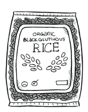

black glutinous rice
Black/purple glutinous is unmilled rice, and come from distinct strains from white glutinous rice. It is a dark black/purple color, and has an earthy, nutty taste. This type of rice is rich in iron.
How to cook: Soak the the rice in water overnight, or for at least 6h. Add water to a pot, superimpose steam basket and add rice in it, cover with lid and steam for 40 min. After 40 min, pour a cup of hot water over rice, shake rice, and steam for another 10 min. Remove from heat, keep covered until serving time.
rice
Rice is the seed of the grass species Oryza sativa (asian rice) or Oryza glaberrima (african rice). Rice is the most important grain with regard to human nutrition and caloric intake, providing more than one-fifth of the calories consumed worldwide by humans. Many varieties of rice are fortified to reduce malnutrition.